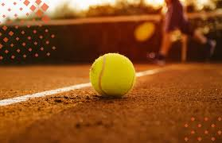

Aréa de Iniciación
El área de iniciación es el primer espacio de interacción con el deporte, por lo que pretende brindar una experiencia positiva en la práctica deportiva dentro de un marco lúdico y de desarrollo personal.
Somos unas Academia Integral de Entrenamiento Tenístico.

Aréa Competición
Área diseñada para la incorporación de fortalezas en el perfil del jugador y patrones de juego para la competencia. Tiene especial atención en potenciar el trabajo de pies, patrones de juego, aspectos mentales y emocionales.
Aréa Alto Rendimiento
El área de alto rendimiento esta especialmente orientada a producir la mejor estrategia para sacar lo mejor de cada jugador, e insertarlo en la élite del tenis nacional y mundial. Un equipo de expertos, acompañan al jugador en su carrera, guiandolos en la inserción de la alta competencia.
